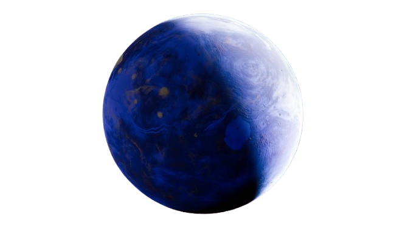
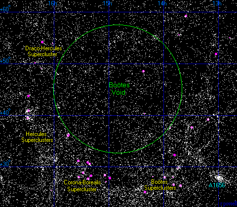
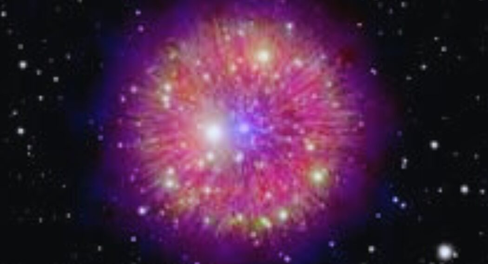
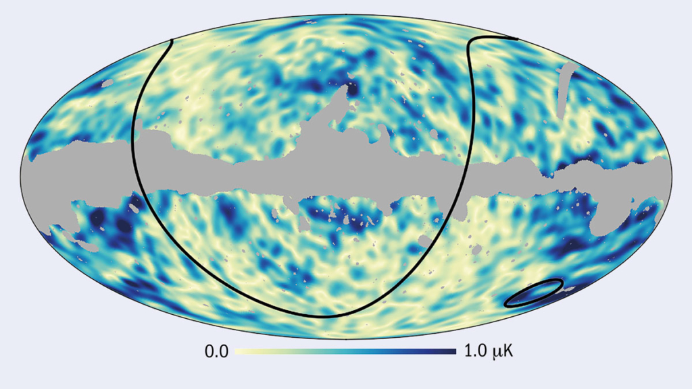
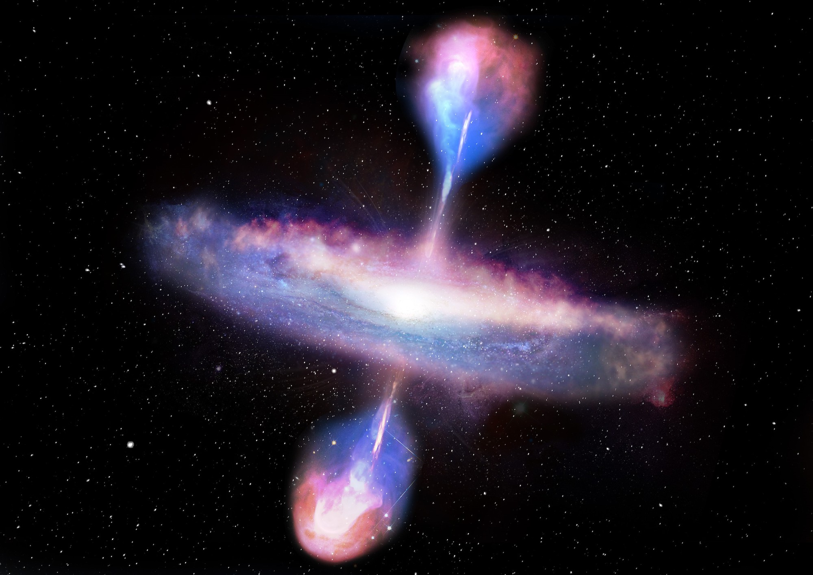
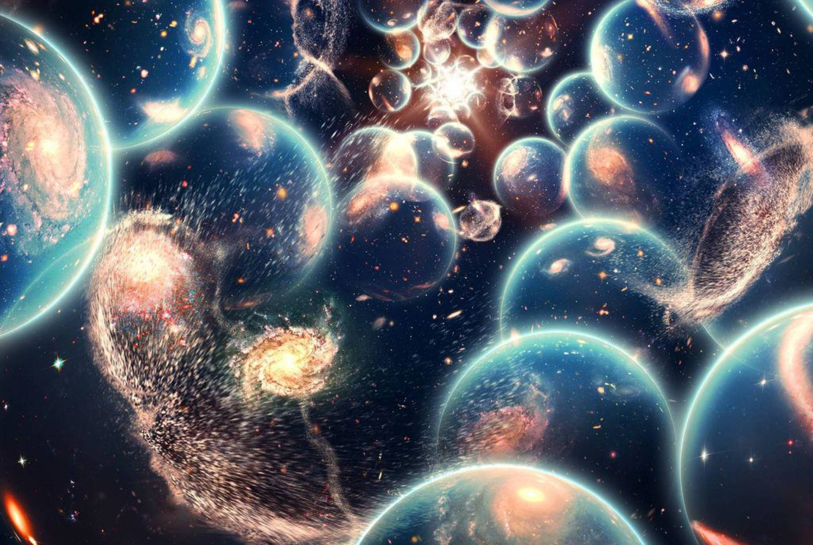

The Weirdest Things in Space: A Tour Through the Cosmic Bizarre
Space is vast, mysterious, and full of wonders that often defy logic. From invisible matter to zombie stars, the universe doesn't just challenge our understanding—it delights in confusing us. Here’s a list of some of the weirdest, most fascinating phenomena that space has to offer.
1. Rogue Planets: The Drifters of the Galaxy
Unlike Earth, which orbits the Sun, rogue planets roam the galaxy without being tethered to any star. Scientists estimate that there may be more rogue planets than stars in the Milky Way. These lonely wanderers are cold, dark, and may even harbor alien life beneath thick icy shells.
2. The Boötes Void: A Whole Lot of Nothing
The Boötes Void is one of the largest known empty spaces in the universe. It spans around 330 million light-years and contains very few galaxies—an almost unimaginable cosmic desert. Its sheer emptiness baffles astronomers and raises questions about how the large-scale structure of the universe formed.
3. Neutron Stars: Spinning Corpses of the Cosmos
After a massive star explodes in a supernova, it can collapse into a neutron star—a city-sized object so dense that a single teaspoon of its material would weigh around a billion tons. Some spin hundreds of times per second and emit powerful beams of radiation, earning them the nickname "pulsars."
.webp)
4. Zombie Stars: Supernova Survivors
Some stars go supernova... and then survive. These so-called zombie stars explode but somehow manage to pull themselves back together and reignite nuclear fusion. It’s like a star rising from the dead—a stellar phenomenon that scientists are still trying to fully understand.
5. Dark Matter and Dark Energy: The Invisible Universe
Together, dark matter and dark energy make up about 95% of the universe, yet we can’t see or directly detect either. Dark matter keeps galaxies from flying apart, while dark energy accelerates the expansion of the universe. We know they're there—because of their effects—but their true nature remains one of the biggest mysteries in modern physics.
.webp)
6. The Cold Spot: A Cosmic Chill Zone
Spotted in the cosmic microwave background (the afterglow of the Big Bang), the Cold Spot is an unusually large and cold region of space. Some scientists think it could be caused by a massive void, while others speculate it might be evidence of a collision between universes. Yes—other universes.
7. Magnetars: Magnetic Monsters
Magnetars are a rare type of neutron star with magnetic fields a quadrillion times stronger than Earth’s. If one were within 1,000 kilometers of Earth, its magnetic field would erase all credit card data and disrupt electronics instantly. Fortunately, they’re incredibly rare—and distant.
.webp)
8. Quasars: Galactic Beacons
Quasars are the ultra-bright centers of distant galaxies, powered by supermassive black holes gobbling up matter. They outshine entire galaxies and emit energy across vast distances, making them visible billions of light-years away. Some are so old they offer glimpses into the early universe.
9. Time Dilation Near Black Holes
Time gets weird near black holes. Thanks to Einstein’s theory of general relativity, time actually slows down near these intense gravitational wells. If you spent time near a black hole and returned to Earth, you’d find that years or even centuries had passed—while you aged only slightly.

10. The Multiverse Theory
It’s not proven, but it’s one of the most mind-bending ideas in cosmology: that our universe might just be one of many. Some versions of string theory and quantum physics suggest the existence of a multiverse—a vast collection of universes with different laws of physics, possibly infinite in number.
Final Thoughts
The universe is far stranger than any science fiction movie could dream up. From dead stars that won’t stay dead to mysterious forces shaping galaxies, space constantly challenges what we think we know. One thing’s certain: the more we learn, the weirder—and more wonderful—it gets.